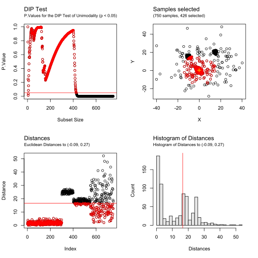

Recursive outlier filtering based on unimodality and multinormality tests
Source:R/filter_outliers.R
filter_outliers.RdRecursive outlier filtering based on unimodality and multinormality tests
filter_outliers( data, center, test = "Mardia", threshold = 0.05, distType, trimmedPerIteration = 1, debug = FALSE, warnings = FALSE )
Arguments
| data | Matrix of numerical values containing the observations (one per row, with two columns for X and Y coordinates) |
|---|---|
| center | Coordinates used to computes the distances of the samples and order them (array of numerical two values, for X and Y) |
| test | Statistical test to use. Valid options are "DIP" for unimodality test, or "Mardia", "Kurtosis", "Skewness", "KS", "KS-adj", "Shapiro", "Lillie", and "Chisq" for multivariate normality test |
| threshold | Threshold of significance for the statistical test (between 0 and 1, default: 0.05) |
| distType | Distance metric used to order the samples. Valid options are "Euclidean", "MCD", "MVE", and "OGK". If empty or NULL, "Euclidean" will be automatically selected for unimodality tests, and "MCD" for normality tests |
| trimmedPerIteration | Number of samples trimmed at each iteration (positive integer, default: 1) |
| debug | Logical value. |
| warnings | Logical value, to display the warnings and errors caught |
Value
The function returns an S3 object of type BRIL.Filtering
containing the following values:
callParameters of the call (contains data, test,
testType, center, threshold, trimmedPerIteration and distType)
distancesDistances of each sample from data to the center
provided
p.valuesP.Values of the test at each iteration
index.p.valuesSubset size corresponding to each P.Value, for plotting purpose
selectedIndices of the samples from data selected at the end of
the filtering
cutoffDistanceDistance of the furthest inlier selected
Details
For unimodality tests parameter distType should be set to
"Euclidean" (as the distribution might contains a large amount of
outliers). For normality tests robust distances are preferable, using a
robust estimate estimates of location and scatter ("MCD","MVE", or "OGK").
See also
Examples
## Example 1 # Illustrative data XY <- rbind( mvtnorm::rmvnorm(300, c(0, 0), diag(2) * 3 - 1), mvtnorm::rmvnorm(100, c(15, 20), diag(2)), mvtnorm::rmvnorm(150, c(-10, 15), diag(2) * 2 - 0.5), mvtnorm::rmvnorm(200, c(5, 5), diag(2) * 200) ) # Compute an estimate for the center center <- median_rec(XY)$median # Remove non unimodal outliers from this location filtering <- filter_outliers(XY, center, test = "DIP", debug = TRUE) print(filtering, maxDisplayed = 200)#> #> => Results for filter_outlier() using DIP Unimodality Test (p.value > 0.05) and Euclidean Distances #> 750 samples: 426 selected, 324 filtered (1 trimmed per iteration) #> #> Selected indices: #> [1] 8 80 25 11 110 117 136 68 257 293 131 189 60 51 116 44 160 133 #> [19] 198 273 229 149 270 291 121 84 170 272 171 236 152 123 86 54 10 215 #> [37] 62 238 30 107 39 208 247 231 221 77 119 93 150 240 135 144 219 61 #> [55] 43 83 3 274 79 139 14 264 183 64 254 99 27 204 250 52 287 1 #> [73] 6 94 230 181 206 42 168 262 156 269 246 216 164 155 280 166 88 237 #> [91] 174 225 53 46 45 224 177 23 259 138 167 16 78 159 286 63 128 124 #> [109] 275 249 35 244 185 101 15 242 18 148 172 211 76 69 96 75 140 298 #> [127] 283 145 48 87 22 282 4 109 55 20 58 142 105 261 103 281 12 196 #> [145] 137 194 289 31 17 41 98 33 65 113 118 199 297 72 89 57 130 143 #> [163] 24 294 73 37 47 9 163 260 243 214 241 34 285 122 207 227 232 95 #> [181] 70 91 175 197 220 74 151 668 277 300 162 226 125 179 251 209 134 2 #> [199] 212 67 #> ... (226 hidden) #> #> DIP Test p.values: #> [1] 0 0 0 0 0 0 0 0 0 0 0 0 0 0 0 0 0 0 0 0 0 0 0 0 0 0 0 0 0 0 0 0 0 0 0 0 0 #> [38] 0 0 0 0 0 0 0 0 0 0 0 0 0 0 0 0 0 0 0 0 0 0 0 0 0 0 0 0 0 0 0 0 0 0 0 0 0 #> [75] 0 0 0 0 0 0 0 0 0 0 0 0 0 0 0 0 0 0 0 0 0 0 0 0 0 0 0 0 0 0 0 0 0 0 0 0 0 #> [112] 0 0 0 0 0 0 0 0 0 0 0 0 0 0 0 0 0 0 0 0 0 0 0 0 0 0 0 0 0 0 0 0 0 0 0 0 0 #> [149] 0 0 0 0 0 0 0 0 0 0 0 0 0 0 0 0 0 0 0 0 0 0 0 0 0 0 0 0 0 0 0 0 0 0 0 0 0 #> [186] 0 0 0 0 0 0 0 0 0 0 0 0 0 0 0 #> ... (548 hidden) #> #> Outliers cutoff distance from center (-0.0904654545512815, 0.266839459838878): #> [1] 16.52322 #> #> #> Euclidean Distances: #> [1] 0.97595886 2.08248837 0.86345743 1.47934924 3.78838061 0.98492225 #> [7] 2.63638613 0.02304162 1.76166366 0.62469531 0.16648044 1.60094754 #> [13] 2.55287307 0.88602648 1.37629928 1.19956273 1.62438175 1.39116388 #> [19] 2.87838267 1.49560948 2.30186301 1.47265122 1.16745578 1.72626314 #> [25] 0.05504131 2.89233761 0.94193821 2.14222980 2.89251391 0.65097798 #> [31] 1.61618974 2.60622789 1.64279897 1.82758427 1.31426414 2.27572237 #> [37] 1.75510696 2.54850982 0.67246232 4.21615544 1.63127324 1.02098553 #> [43] 0.81966948 0.42502545 1.13625458 1.13615653 1.76163918 1.45727699 #> [49] 2.76051256 3.05681872 0.39467215 0.96771492 1.12623043 0.62049561 #> [55] 1.48902514 2.42961954 1.70353677 1.50650884 2.09764196 0.35795858 #> [61] 0.80625249 0.63348113 1.24421837 0.91803472 1.64311594 2.85341992 #> [67] 2.08510998 0.24217259 1.41237103 1.94072159 2.24649278 1.68793114 #> [73] 1.74834560 1.98126305 1.41489853 1.41206746 0.74227045 1.22334137 #> [79] 0.88182352 0.04989070 2.23548477 3.25121994 0.83079535 0.52043230 #> [85] 2.72496997 0.60973717 1.47058674 1.06263940 1.69036472 2.67433947 #> [91] 1.94393097 2.75882422 0.77879904 0.98562420 1.93129201 1.41320538 #> [97] 2.42678283 1.63645252 0.92457690 3.25406507 1.35781042 4.38258800 #> [103] 1.56569092 2.40985325 1.54410251 5.08057196 0.66871178 2.21900834 #> [109] 1.48857455 0.19906815 2.32655583 2.88503989 1.64866855 2.28722408 #> [115] 4.12935236 0.40122454 0.20387809 1.65580869 0.76464386 2.45025503 #> [121] 0.49838802 1.84225228 0.59620615 1.27018897 2.04856131 3.11246261 #> [127] 3.24625693 1.26628152 2.85710411 1.71504204 0.30495723 3.23147241 #> [133] 0.44602733 2.07434807 0.78644437 0.20409521 1.60970290 1.19006712 #> [139] 0.88551983 1.42873171 5.10769943 1.52354214 1.71754284 0.79175558 #> [145] 1.45673945 2.13136818 2.98453871 1.39623528 0.48131046 0.78126240 #> [151] 1.98175641 0.58207512 2.71165647 2.33387885 1.05318765 1.03807290 #> [157] 3.38891276 4.81363309 1.22560491 0.43155832 2.67102250 2.01527022 #> [163] 1.76634061 1.05073618 2.35957344 1.06066382 1.19028722 1.02481771 #> [169] 4.69268524 0.52484557 0.54877542 1.40887613 3.04040389 1.07964719 #> [175] 1.94398201 3.37627056 1.14039119 3.42123160 2.04900231 2.10195887 #> [181] 0.99563176 3.43086243 0.90673755 3.51727522 1.35053825 3.30825557 #> [187] 2.40458005 3.01404035 0.35076597 4.76407913 2.36424593 2.15971574 #> [193] 2.12885331 1.61354864 2.57468453 1.60796226 1.94512138 0.45661119 #> [199] 1.65751511 2.94715761 #> ... (550 hidden) #>## Example 2 # Illustrative data XY <- rbind( mvtnorm::rmvnorm(300, c(0, 0), diag(2) * 4 - 1.5), mvtnorm::rmvnorm(150, c(5, 5), diag(2) * 400) ) # Compute an estimate for the center center <- median_rec(XY)$median # Remove non normal outliers from this location filtering <- filter_outliers(XY, center, test = "Chisq", distType = "MVE", debug = TRUE) print(filtering)#> #> => Results for filter_outlier() using Chisq Normality Test (p.value > 0.05) and MVE-based Robust Distances #> 450 samples: 310 selected, 140 filtered (1 trimmed per iteration) #> #> Selected indices: #> [1] 206 3 254 221 261 63 190 294 97 245 166 110 8 144 255 156 231 164 #> [19] 260 58 30 44 279 248 202 27 109 32 285 157 134 23 103 39 162 292 #> [37] 217 56 53 196 191 52 111 247 99 71 13 295 33 80 18 89 22 229 #> [55] 266 68 161 222 207 15 140 141 12 73 34 186 118 209 219 215 66 274 #> [73] 250 79 187 59 135 69 98 123 208 117 287 216 235 299 246 104 1 227 #> [91] 185 86 45 197 163 298 72 102 238 17 74 282 253 199 200 251 188 19 #> [109] 240 31 256 121 2 76 289 119 47 146 179 107 192 21 234 270 171 233 #> [127] 174 20 41 133 84 159 183 236 94 28 273 131 226 167 148 189 291 7 #> [145] 90 29 10 48 127 297 177 153 112 108 149 139 142 290 264 210 212 283 #> [163] 300 218 237 36 95 16 24 154 268 249 40 151 243 220 160 122 143 181 #> [181] 193 175 230 277 115 128 262 67 85 37 288 75 293 105 5 87 92 132 #> [199] 14 101 #> ... (110 hidden) #> #> CHISQ Test p.values: #> [1] 0.000000e+00 0.000000e+00 0.000000e+00 0.000000e+00 0.000000e+00 #> [6] 0.000000e+00 0.000000e+00 0.000000e+00 0.000000e+00 0.000000e+00 #> [11] 0.000000e+00 0.000000e+00 0.000000e+00 0.000000e+00 0.000000e+00 #> [16] 0.000000e+00 0.000000e+00 0.000000e+00 0.000000e+00 0.000000e+00 #> [21] 0.000000e+00 0.000000e+00 0.000000e+00 0.000000e+00 0.000000e+00 #> [26] 0.000000e+00 0.000000e+00 0.000000e+00 0.000000e+00 0.000000e+00 #> [31] 0.000000e+00 0.000000e+00 0.000000e+00 0.000000e+00 0.000000e+00 #> [36] 0.000000e+00 0.000000e+00 0.000000e+00 0.000000e+00 0.000000e+00 #> [41] 0.000000e+00 0.000000e+00 0.000000e+00 0.000000e+00 0.000000e+00 #> [46] 0.000000e+00 0.000000e+00 0.000000e+00 0.000000e+00 0.000000e+00 #> [51] 0.000000e+00 0.000000e+00 0.000000e+00 0.000000e+00 0.000000e+00 #> [56] 0.000000e+00 0.000000e+00 0.000000e+00 0.000000e+00 0.000000e+00 #> [61] 0.000000e+00 0.000000e+00 0.000000e+00 0.000000e+00 0.000000e+00 #> [66] 0.000000e+00 0.000000e+00 0.000000e+00 0.000000e+00 0.000000e+00 #> [71] 0.000000e+00 0.000000e+00 0.000000e+00 0.000000e+00 0.000000e+00 #> [76] 0.000000e+00 0.000000e+00 0.000000e+00 0.000000e+00 0.000000e+00 #> [81] 0.000000e+00 0.000000e+00 0.000000e+00 0.000000e+00 0.000000e+00 #> [86] 0.000000e+00 0.000000e+00 0.000000e+00 0.000000e+00 0.000000e+00 #> [91] 0.000000e+00 0.000000e+00 0.000000e+00 0.000000e+00 0.000000e+00 #> [96] 0.000000e+00 0.000000e+00 0.000000e+00 0.000000e+00 0.000000e+00 #> [101] 0.000000e+00 0.000000e+00 0.000000e+00 0.000000e+00 0.000000e+00 #> [106] 0.000000e+00 0.000000e+00 0.000000e+00 0.000000e+00 0.000000e+00 #> [111] 0.000000e+00 0.000000e+00 0.000000e+00 0.000000e+00 0.000000e+00 #> [116] 0.000000e+00 0.000000e+00 0.000000e+00 0.000000e+00 0.000000e+00 #> [121] 0.000000e+00 0.000000e+00 0.000000e+00 0.000000e+00 0.000000e+00 #> [126] 0.000000e+00 0.000000e+00 3.552714e-15 2.660094e-13 3.237521e-12 #> [131] 8.913026e-11 3.966446e-09 2.395068e-07 3.971336e-07 8.977841e-06 #> [136] 4.687980e-05 4.471351e-04 1.598587e-03 8.272998e-03 3.025540e-02 #> [141] 7.202887e-02 2.170242e-01 3.403813e-01 5.073715e-01 8.791986e-01 #> [146] 9.478029e-01 9.855075e-01 9.679281e-01 7.787484e-01 6.244703e-01 #> [151] 5.823610e-01 5.394514e-01 3.521519e-01 3.352576e-01 2.945812e-01 #> [156] 2.521862e-01 2.021606e-01 1.625668e-01 1.517717e-01 1.216882e-01 #> [161] 8.608735e-02 9.711731e-02 8.111194e-02 6.304562e-02 6.867270e-02 #> [166] 7.420659e-02 6.580507e-02 5.010283e-02 4.222414e-02 4.392161e-02 #> [171] 3.811632e-02 3.144007e-02 2.541973e-02 2.429725e-02 1.902755e-02 #> [176] 1.919898e-02 1.865091e-02 1.483937e-02 1.422128e-02 9.943564e-03 #> [181] 1.182263e-02 8.210400e-03 9.530936e-03 7.212801e-03 1.034245e-02 #> [186] 6.877785e-03 6.023257e-03 5.417865e-03 6.046374e-03 4.480414e-03 #> [191] 4.651500e-03 3.334790e-03 4.684270e-03 5.038796e-03 3.914316e-03 #> [196] 3.843897e-03 3.739820e-03 3.028442e-03 3.351205e-03 2.247315e-03 #> ... (248 hidden) #> #> Outliers cutoff distance from center (0.146578697922888, -0.419030948616822): #> [1] 5.475399 #> #> #> MVE-based Robust Distances: #> [1] 0.86855269 0.98446848 0.03357012 2.23790868 1.42804476 2.48120360 #> [7] 1.15898637 0.24875315 4.13211716 1.16447081 1.68491115 0.68094588 #> [13] 0.56861878 1.48669232 0.64998291 1.27501361 0.94112763 0.58358684 #> [19] 0.97124814 1.09717459 1.06112343 0.58918724 0.46406716 1.28538557 #> [25] 1.69769877 3.09697946 0.41640871 1.12020473 1.16088648 0.33809256 #> [31] 0.97688235 0.42221624 0.57090082 0.69019898 1.51162666 1.25920263 #> [37] 1.39213158 1.53342332 0.48132699 1.30317931 1.09750274 1.50747175 #> [43] 1.89834228 0.34104667 0.89556430 1.49445391 1.01689474 1.16696739 #> [49] 2.09140339 1.57416226 1.87047487 0.55361950 0.53998534 2.03123424 #> [55] 2.00100195 0.53270675 1.60970778 0.30149307 0.77111447 1.50840975 #> [61] 2.77976334 2.62708194 0.10690058 1.87300877 1.63803514 0.72677676 #> [67] 1.37185325 0.62716277 0.79995658 2.11554947 0.56459774 0.92842549 #> [73] 0.68986713 0.94428573 1.41058481 0.98961431 2.09181339 2.25858425 #> [79] 0.76668554 0.57162208 2.54794323 1.92523012 1.54845992 1.11177287 #> [85] 1.38738316 0.88572122 1.43132966 1.49451326 0.58672882 1.15900674 #> [91] 1.49491296 1.45156969 1.76707345 1.11527714 1.26028720 2.10474603 #> [97] 0.16943698 0.81495660 0.56361009 2.28048087 1.48880821 0.93584477 #> [103] 0.46981161 0.85877115 1.42306775 1.80040202 1.04483684 1.19166045 #> [109] 0.41697247 0.23708915 0.55517410 1.18874918 1.54124223 1.65394247 #> [115] 1.36214855 1.72593236 0.83230750 0.72094649 1.00533345 1.90024741 #> [121] 0.98074853 1.32844798 0.82173945 2.07346791 1.76843871 3.47912951 #> [127] 1.17345496 1.36510716 2.30849886 1.57317099 1.12603996 1.46784339 #> [133] 1.10220565 0.44037603 0.78409878 2.65723314 1.87363064 2.30954466 #> [139] 1.20734254 0.65961034 0.66032023 1.21213204 1.33157163 0.25258391 #> [145] 1.50286713 1.02921573 2.80536514 1.13851688 1.20429635 1.91264900 #> [151] 1.30948430 2.28530445 1.18194689 1.28570783 3.29683713 0.27535403 #> [157] 0.42698139 1.67216553 1.11247672 1.32287352 0.63443567 0.49446737 #> [163] 0.91473048 0.28727887 1.78788070 0.23288900 1.13492618 1.88593654 #> [169] 1.74194030 2.03245294 1.07402613 1.53897283 2.52655516 1.09356380 #> [175] 1.34242541 1.57189221 1.18119251 1.78947050 1.03324133 1.87079429 #> [181] 1.33308770 1.52899724 1.11408063 1.50215719 0.87843196 0.69395284 #> [187] 0.77008462 0.96966119 1.15275832 0.15867084 0.54915199 1.05469229 #> [193] 1.34111108 1.77312403 2.13827812 0.54155885 0.91065687 2.20859605 #> [199] 0.95431692 0.96413472 #> ... (250 hidden) #>